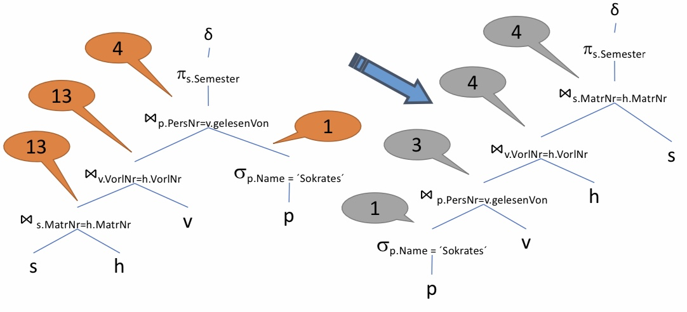
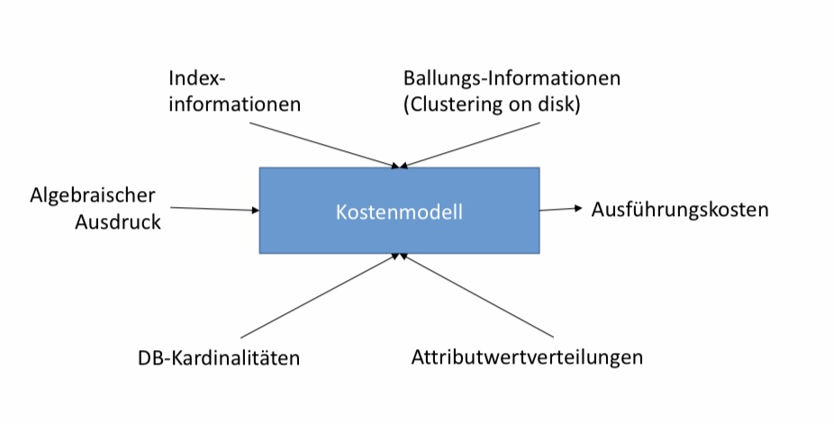
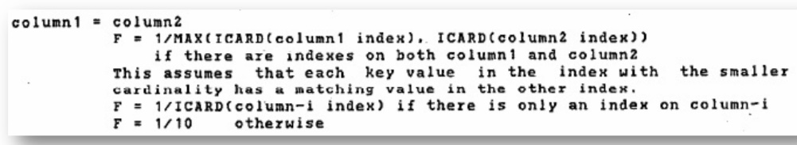

Bearbeitung
Contents
Bearbeitung¶
Anfragebearbeitung – Grundproblem
Anfragen sind deklarativ.
SQL, Relationale Algebra
Anfragen müssen in ausführbare (prozedurale) Form transformiert werden.
Ziele
„QEP“ – prozeduraler Query Execution Plan
Effizienz
Schnell
Wenig Ressourcenverbrauch (CPU, I/O, RAM, Bandbreite)
Energie
Ablauf der Anfragebearbeitung
Parsing
Parsen der Anfrage (Syntax)
Überprüfen der Elemente („Semantik“)
ParsebaumWahl des logischen Anfrageplans
Baum mit logischen Operatoren
Potentiell exponentiell viele
Wahl des optimalen Plans – Logische Optimierung – Regelbasierter Optimierer – Kostenbasierter OptimiererWahl des physischen Anfrageplans
Ausführbar
Programm mit physischen Operatoren – Algorithmen – Scan Operatoren
Wahl des optimalen Plans – physische Optimierung

Parsen der Anfrage¶
Syntaxanalyse¶
Aufgabe: Umwandlung einer SQL Anfrage in einen Parsebaum.
Atome (Blätter)
Schlüsselworte
Konstanten
Namen (Relationen und Attribute)
Syntaxzeichen
Operatoren
Syntaktische Kategorien
Namen für Teilausdrücke einer Anfrage
Eine Grammatik für einen Teil von SQL¶
Anfragen
:: = <SFW> :: = ( ) Mengenoperatoren fehlen
SFWs
::= SELECT FROM WHERE Gruppierung, Sortierung etc. fehlen
Listen
::= , □ ::= □ ::= , □ ::=
■ Bedingungen (Beispiele) □::= AND □ ::= IN □ ::= = □ ::= LIKE
■, , , nicht durch grammatische Regel definiert Vollständig z.B. hier: http://docs.openlinksw.com/virtuoso/GRAMMAR.html
Parse-Baum¶

SELECT Titel
FROM spielt_in, Schauspieler
WHERE SchauspielerName = Name
AND Geburtstag LIKE ‘%1960’;
Prüfung der Semantik¶
Während der Übersetzung semantische Korrektheit prüfen
Existieren die Relationen und Sichten der FROM Klausel?
Existieren die Attribute in den genannten Relationen?
Sind sie eindeutig?
Korrekte Typen für Vergleiche?
Aggregation korrekt?
…
Vom Parse-Baum zum Operatorbaum¶

SELECT Titel
FROM spielt_in, Schauspieler
WHERE SchauspielerName = Name
AND Geburtstag LIKE ‘%1960’;
Transformationsregeln der RA¶
Anfragebearbeitung – Transformationsregeln¶
Transformation der internen Darstellung
Ohne Semantik zu verändern
Zur effizienteren Ausführung
Insbesondere: Kleine Zwischenergebnisse
Äquivalente Ausdrücke
Zwei Ausdrücke der relationalen Algebra heißen äquivalent, falls
Gleiche Operanden (= Relationen)
Stets gleiche Antwortrelation
Stets?
Für jede mögliche Instanz derDatenbank

Kommutativität und Assoziativität¶
ist kommutativ und assoziativ
R S = S R
(R S) T = R (S T)
\(\cup\) ist kommutativ und assoziativ
R \(\cup\) S = S \(\cup\) R
(R \(\cup\) S) \(\cup\) T = R \(\cup\) (S \(\cup\) T)
\(\cap\) ist kommutativ und assoziativ
R \(\cap\) S = S \(\cap\) R
(R \(\cap\) S) \(\cap\) T = R \(\cap\) (S \(\cap\) T)
⋈ ist kommutativ und assoziativ
R ⋈ S = S ⋈ R
(R ⋈ S) ⋈ T = R ⋈ (S ⋈ T)
Gilt jeweils für Mengen und Multimengen
Ausdrücke können in beide Richtungen verwendet
Weitere Regeln¶
Selektion
\(\sigma_{c1 AND c2}(R ) = \sigma_{c1}(\sigma_{c2} (R))\)
\(\sigma_{c1 OR c2}(R ) = \sigma_{c1}(R) \cup \sigma_{c2} (R)\)
Nicht bei Multimengen
\(\sigma_{c1}(\sigma_{c2}(R)) = \sigma_{c2}(\sigma_{c1}(R))\)
\(\sigma_{c}(R \Phi S) \equiv (\sigma_{c} (R)) \Phi (\sigma_{c} (S))\)
\(\Phi \in \{\cup, \cap , - , ⋈\}\)
\(\sigma_{c}(R \Phi S) \equiv (\sigma_{c} (R)) \Phi S\)
\(\Phi \in \{\cup, \cap , - , ⋈\}\)
Falls sich c nur auf Attribute in R bezieht
Projektion\(\pi_{L}(R ⋈ S) = \pi_{L}(\pi_{M}(R) ⋈ \pi_{N}(S))\)
\(\pi_{L}(R ⋈_{C} S) = \pi{L}(\pi_{M}(R) ⋈_{C} \pi_{N}(S))\)
\(\pi_{L}(R \times S) = \pi_{L}(\pi_{M}(R) \times \pi_{N}(S))\)
\(\pi_{L}(\sigma_{C}(R)) = \pi_{L}(\sigma_{C}(\pi_{M}(R)))\)
Optimierung¶
Anfragebearbeitung - Optimierung¶
Regelbasierte Optimierung
Fester Regelsatz schreibt Transformationen gemäß der genannten Regeln vor.
Prioritäten unter den Regeln: Heuristiken
Kostenbasierte Optimierung
Kostenmodell
Transformationen um Kosten zu verringern
Bestimmung des optimalen Plans
Bestimmung der optimalen Joinreihenfolge
Im Allgemeinen wird nicht die optimale Auswertungsstrategie gesucht, sondern eine einigermaßen effiziente Variante.
Ziel: Avoid the worst case.
Logische und physische Optimierung¶
Logische Optimierung
Jeder Ausdruck kann in viele verschiedene, semantisch äquivalente Ausdrücke umgeschrieben werden.
Wähle den (hoffentlich) besten Ausdruck (=Plan, =QEP)
Physische Optimierung
Für jede relationale Operation gibt es viele verschiedene Implementierungen.
Zugriff auf Tabellen
Scan, verschiedene Indizes, sortierter Zugriff, …
Joins
Nested loop, sort-merge, hash, …
Wähle für jede Operation die (hoffentlich) beste Implementierung
Abhängigkeit beider Probleme!
Logische Optimierung – regelbasiert¶
Grundsätze der logischen Optimierung
Selektionen so weit wie möglich im Baum nach unten schieben.
Selektionen mit AND können aufgeteilt und separat verschoben werden.
Projektionen so weit wie möglich im Baum nach unten schieben,
bzw. neue Projektionen können eingefügt werden.
Duplikateliminierung kann manchmal entfernt werden oder verschoben werden.
Kreuzprodukte mit geeigneten Selektionen zu einem Join zusammenfassen.
Noch nicht hier: Suche nach der optimalen Joinreihenfolge
Folie: Prof. Alfons Kemper, TU München
Anwendung der Transformationsregeln¶
select distinct s.Semester
from Studiernden s, hören h
Vorlesungen v,
Professorinnen p
where p.Name = ´Sokrates´
and v.gelesenVon = p.PersNr
and v.VorlNr = h.VorlNr
and h.MatrNr = s.MatrNr
In welchen Semestern sind die Studierenden, die Vorlesungen bei Sokrates hören?

Aufspalten der Selektionsprädikate¶

Verschieben der Selektionsprädikate „Pushing Selections“¶

Zusammenfassung von Selektionen und Kreuzprodukten zu Joins¶

Optimierung der Joinreihenfolge: Kommutativität und Assoziativität ausnutzen¶

Was hat´s gebracht?¶

Einfügen von Projektionen¶

SQLite Explain¶

Kostenmodelle¶
Kostenbasierte Optimierung¶
Konzeptionell: Generiere alle denkbaren Anfrageausführungspläne.
Bewerte deren Kosten anhand eines Kostenmodells
Statistiken und Histogramme
Kalibrierung gemäß verwendeter Rechner
Abhängig vom verfügbaren Speicher
Aufwands-Kostenmodell
Durchsatz-maximierend
Nicht Antwortzeit-minimierend
Achtung: Nicht zu lange optimieren!Führe billigsten Plan aus
Problemgröße (Suchraum)¶
Konzeptionell: Generiere alle denkbaren Anfrageausführungspläne
Anzahl Bushy-Pläne mit n Tabellen
\(\frac{(2(n-1))!}{(n-1)!}\)
n |
\(2^n\) |
(2(n-1))!/(n-1)! |
|---|---|---|
2 |
4 |
2 |
5 |
32 |
1680 |
10 |
1024 |
1,76 \(\times 10^{10}\) |
20 |
1.048.576 |
\(4,3\times10^{27}\) |
Plankosten unterscheiden sich um viele Größenordnungen.
Optimierungsproblem ist NP-hart
Kostenmodell¶

Statistiken¶
Zu jeder Basisrelation
Anzahl der Tupel
Tupelgröße
Zu (jedem) Attribut
Min / Max
Werteverteilung (Histogramm)
Anzahl der distinct Werte
Oft: „Kardinalität“
Zum System
Speichergröße
Bandbreite
I/O Zeiten
CPU Zeiten
Problem: Erstellung und Update der Statistiken
Deshalb meist nur explizit/manuell zu initiieren
runstats()

Kosten von Operationen¶
Projektion:
Keine Kosten falls mit anderem Operator kombiniert
Selektion
Ohne Index: Gesamte Relation von Festplatte lesen
Mit Baum-Index (z.B. B-Baum): Teil des Index von Platte lesen (Baumtiefe) und gesuchte Seite von Platte lesen
Bei Pipelining: (Fast) keine Kosten
Join
Je nach Joinalgorithmus
Nested Loops, Hash-Join, Sort-Merge Join, usw.
Sortierung: Nicht hier
Wesentliches Kostenmerkmal: Anzahl der Tupel im Input
Insbesondere: Passt die Relation in den Hauptspeicher?
Selektion, Projektion, Sortierung, Join
Output ist Input des nächsten Operators.
Deshalb: Ein Kostenmodel schätzt u.a. für jede Operation die Anzahl der Ausgabetupel.
„Selektivität“ in Bezug auf Inputgröße
#Ausgabetupel = #Eingabetupel x Selektivität
Auch „Selektivitätsfaktor“ (selectivity factor, sf)
Selektivität¶
Selektivität schätzt Anzahl der qualifizierenden Tupel relativ zur Gesamtanzahl der Tupel in der Input Relation.
Projektion:
sf = |R|/|R| = 1
Selektion:
sf = |\(\sigma_c\)®| / |R|
Join:
sf = |R ⋈ S| / |R x S| = |R ⋈ S| / (|R| · |S|)
Selektivität schätzen¶
Selektion:
Selektion auf einen Schlüssel:
sf = 1 / |R|
Selektion auf einen Attribut A mit m verschiedenen Werten:
sf = (|R| / m) / |R| = 1/m
Dies ist nur geschätzt!
Join
Equijoin zwischen R und S über Fremdschlüssel in S
sf = 1 / |R|
„Beweis“: sf = |R ⋈ S| / (|R x S|) = |S| / (|R| · |S|)


Join Selektivität (Selinger Style)¶

Beispiel
Modelle zum besseren Schätzen der Selektivität¶
Gleichverteilung der Werte
Platzsparend (count, max, min), einfach
Schlechte Abschätzung bei “skew” (ungleiche Verteilung)
Histogramme (Beispiel gleich)
Parametrisierte Größe, einfach
Güte der Abschätzung hängt von Histogrammtyp und -größe ab.
Außerdem: Aktualität garantieren ist aufwändig.
Sampling
Repräsentative Teilmenge der Relation
Parametrisierte Größe, schwierig zu finden
Güte hängt von Samplingmethode und Samplegröße ab
Außerdem: Aktualität
Beispiel zu Histogrammen¶
SELECT *
FROM product p, sales S
WHERE p.id=s.p_id and
p.price > 100
Gegeben 3300 products, 1M sales
Gleichverteilung
Preisspanne ist 0-1000 => Selektivität der Bedingung ist 9/10
Erwartet: 9/10*3300 ≈ 3000 Produkte
Histogramm-basiert
Selektivität der Bedingung ist 5/3300 ≈ 0,0015 also 5 Produkte

Kosten – Weitere Komplikationen¶
Parallelität / Pipelining
Kosten aller Operatoren können nicht addiert werden.
Hauptspeichergröße
Pufferung und Caching
I/O Kosten (Lesen einer Seite) vs. CPU Kosten
Multiuser: Durchsatz statt Antwortzeit
=> Kostenmodelle sind hochkomplex
Ausblick auf DBS II¶
Diverse Algorithmen für einzelne Operatoren
Insbesondere Join und Sortierung
Kostenmodelle/Kostenschätzung genauer
Optimale Joinreihenfolge: Dynamische Programmierung
Physische Anfragepläne / Pipelining